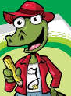

Para definir mejor
Explica sobre las líneas punteadas el significado de los términos destacados.
En las zonas templadas, los bosques tienen árboles y arbustos de
follaje caduco, es decir,La fauna de los bosques está formada principalmente por
predadores, es decir,Las praderas son ideales para el cultivo de
oleaginosas, es decir,